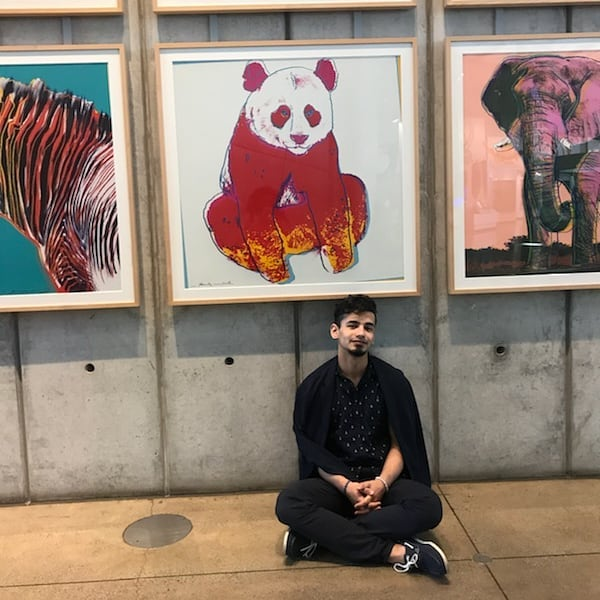
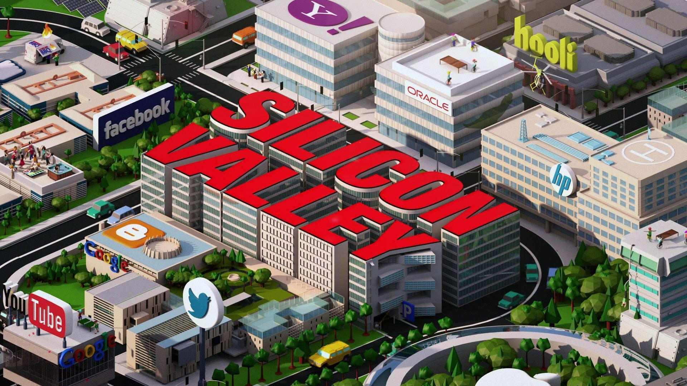
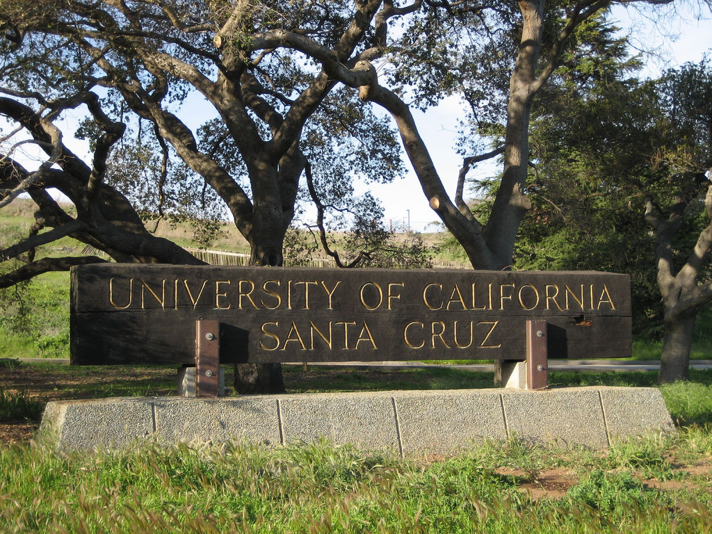
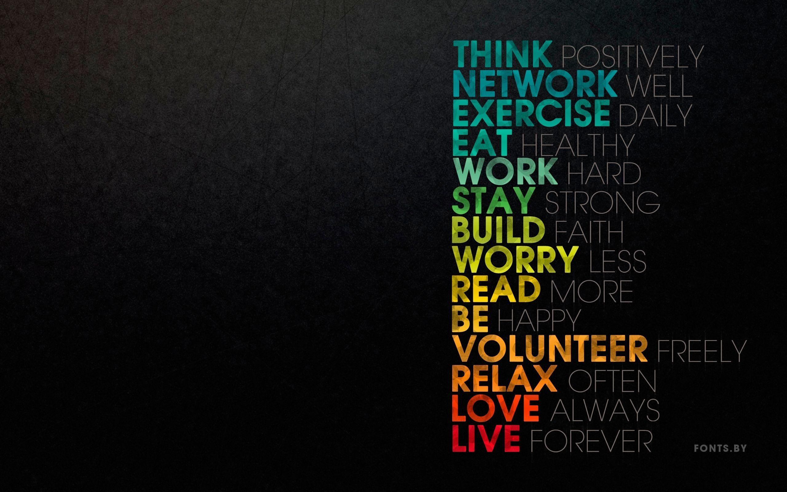
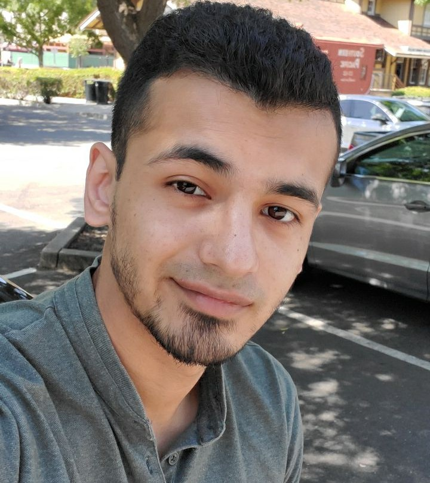
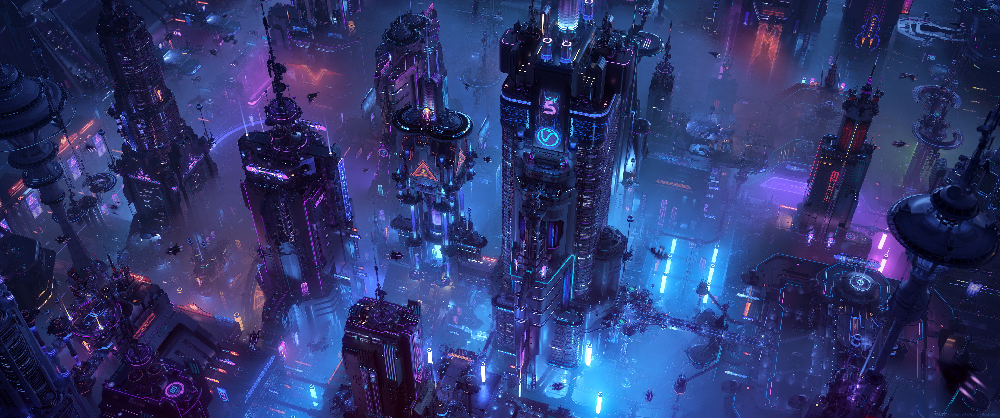
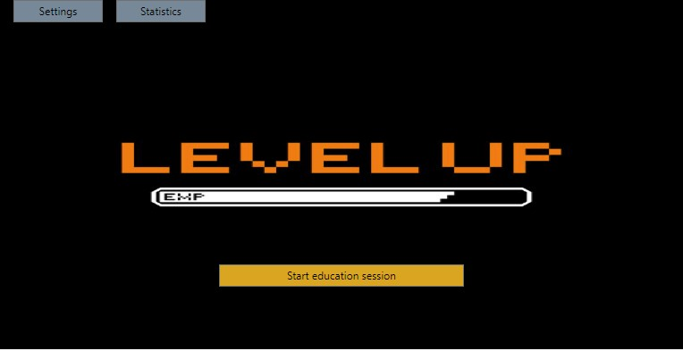

My background

My full name is Kamaluddin Shamsi. However, friends and family call me just Kamal.
I am 25 years old, I was born in Afghanistan but raised in Russia. Majority of my life I have lived in Russia all the way up to after my graduation from highschool. I went to Moscow State University of Instrument Engineering and Computer
Science, but once I finished my first semester, I quit and shortly after that I moved to the United States.
I was in the 7th grade when I for the first time started thinking about living in the US, it all started from Hollywood movies, then as I was getting older and understanding what I want from my life, I was seriously considering moving
to the United States.

Some people have a hard time finding what they truly like, for me, it was a long search until I finally understood what I like to do and what I will be investing the majority of my time in the future. It was computer science, I have noticed
I have always been around computers and technologies. It all started from video games, but then it grew to interest in how everything is actually working.
At the end of the highschool I had 2 plans:
A)Get into Russian university and make my career in Russia
B)Move to the United States and do my best there, even if that means starting everything from scratch.

After my first semester at Moscow State University of Instrument Engineering and Computer Science, I knew I wanted to try the plan B. My destination was California,specifically silicon valley - the tech capital of the world.

Today, I am a student at the University of California Santa Cruz. I am majoring in computer science, I am currently an intern in a Tech startup company and continuously working hard my way to the top.
 My journey in the United States was tough and full of challenges, however, the person that I have become today is motivated, has a vision and goals. I’ve learned a lot
of valuable lessons that I believe will help me to succeed in my life.
Resume

Name: Kamaluddin Shamsi
Email: kamaluddin.shamsi@gmail.com
Summary:
Dedicated and experienced professional with a strong background in network engineering and software development. Skilled in configuring, monitoring, and upgrading network systems and developing and maintaining software applications using programming languages such as C, C++, C#, Javascript, and Python. A highly adaptable individual committed to continued learning and growth in a dynamic and collaborative team environment.
Skills:
- Proficient in C++, C, C#, Java Script, and Python programming languages for software development.
- Strong background in network engineering, system administration, and configuring, monitoring, and upgrading network systems for maximum uptime and minimal downtime.
- Experienced in UI/UX design and front-end and back-end development, with expertise in React library and RESTful APIs.
- Knowledgeable in cybersecurity practices, including penetration testing, encryption, and firewalls, with experience in Cisco ASA and VPN.
- Proficient in Git for version control and agile methodologies for project management.
- Experienced with Windows, macOS, Linux, Unix, Bash, PowerShell, Docker, and virtualization platforms such as VMware, VirtualBox, and Hyper-V.
- Knowledgeable in network protocols such as TCP/IP, HTTP, DNS, DHCP,BGP and etc.,
- Familiar with cloud networking for AWS, Azure, and Google Cloud.
Languages:
Russian,Farsi,English
Experience:
Kilik Solutions
System administrator
San Ramon, CA March 2021 - Present
=========================================================================
As a system administrator, I had a wide range of responsibilities:
-Configuring, monitoring, and upgrading network systems, including switches, routers, and firewalls, to ensure maximum system uptime and minimal downtime.
- Providing technical support for both in-person and remote users, troubleshooting software and network issues quickly and efficiently.
- Creating and maintaining scripts to automate system tasks, such as managing user accounts, updating software and security patches, and backing up critical data.
- Collaborating with cross-functional teams to design and implement new software solutions and network upgrades.
=========================================================================
Education:
University of California Santa Cruz
Santa Cruz, CA - Bachelor's degree in Computer Science
Diablo Valley College
Pleasant Hill, CA — Associate in Computer Science
Moscow State University of Instrument Engineering and Computer Science
Moscow, Russian
=========================================================================
Achievments:
IBM Cybersecurity Analyst Professional Certificate
Cisco CCNA certificate is in progress
Hobbies,projects and goals

I am interested in computer science and I noticed that the technology environment is dynamic. Whoever studies computer science-related majors or working in the field needs to be prepared for the rapid changes happening in the industry.
I stay aware of the challenges companies face and consistently read articles on how tech companies work. I am continuously developing my coding abilities and currently I am capable to work with following languages and platforms such
as: C,C++,C#, Assembly language,HTML,CSS and Javascript . My skills allowed me to make my own software. One of them is to automate the process of learning and make it more efficient.

During this process, I sought out a senior developer as a mentor and he has provided guidance throughout my learning process. The idea came to me as I noticed that the productivity of students dramatically dropped and the amount of time
we spend in front of a screen increased since the national lockdown began. Thus, the app I created is designed to pop up on your screen every thirty minutes with a question and four multiple-choice answers on the topic you choose to
learn about. This application is user friendly. Due to its simplicity, the learning material would become easier to memorize which would encourage students to study the topic of their choice.
My passion to solve everyday challenges has led me to experiment with my knowledge, find creative solutions, and grow as a developer.With technology expanding into every corner of human society, my creative problem-solving ability and
skills will allow me to overcome new challenges. As a student of UC Santa Cruz, I have seen the need for computer science during education. I hope after I finish my degree, I will be able to move on to working on solving major issues
that humanity is facing such as cyber security.Nearly 40% of WEF leaders cited cybersecurity as a “clear and present danger” to the global economy. Like pandemics, income inequality and extreme weather caused by climate change, cybersecurity
is a global problem. Working in a team, together we can make the world a better place for everyone.
Contact me
Elements
Icons
Actions